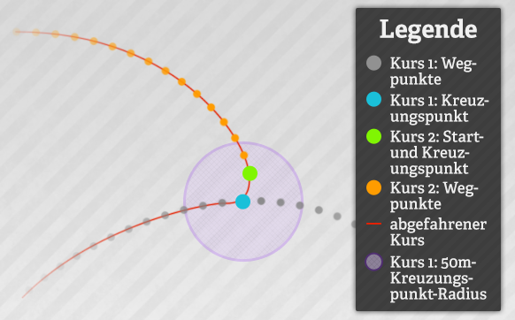
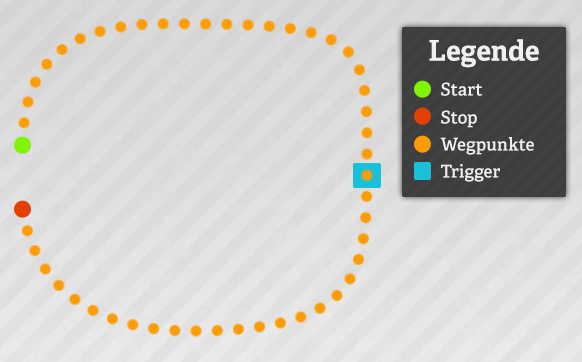
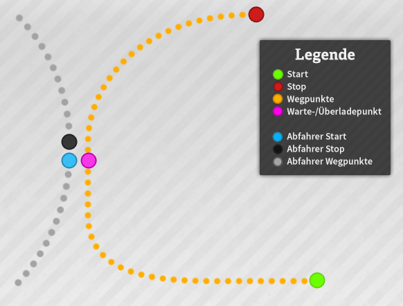
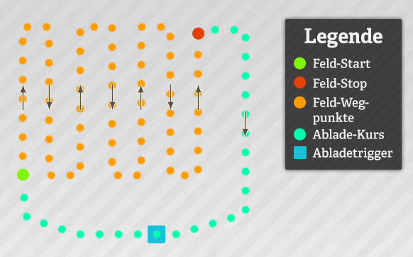
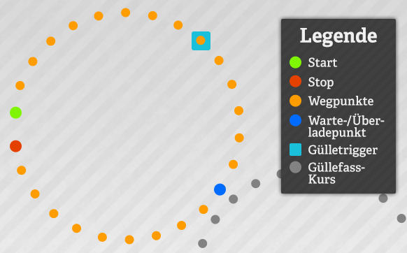
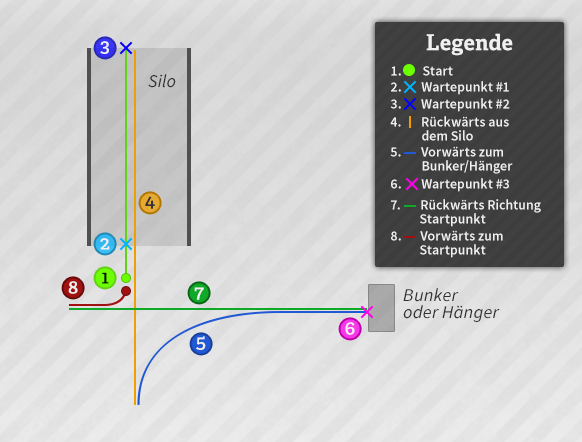
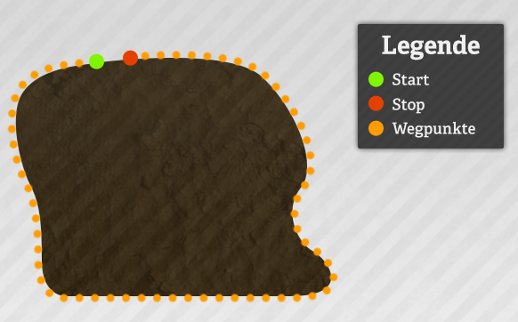
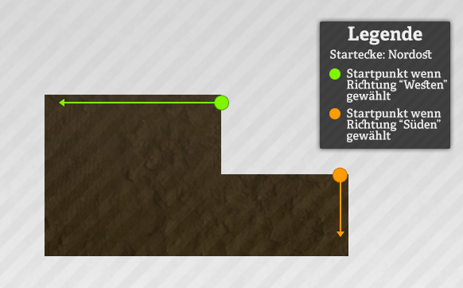
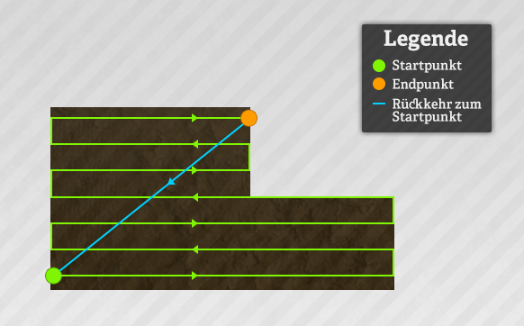
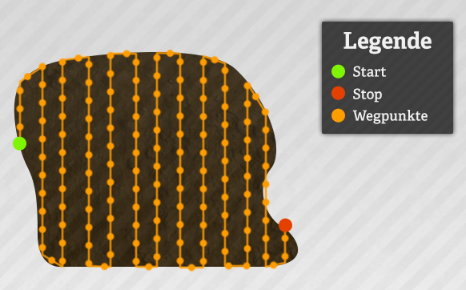

Die Steuerung des Abfahrhelfers funktioniert im wesentlichem mit der Maus, da freie Tasten im Landwirtschafts Simulator ja sehr rar sind. Mit einem Klick auf die rechte Maustaste aktiviert ihr das Courseplay HUD, in dem ihr den Abfahrer konfigurieren könnt. Zusätzlich sind einige Funktionen wie Abfahrer starten und stoppen auch über die Tastatur über die Tasten STRG+NUM 7 bis STRG+NUM 9 belegt. Im HUD kann das Öffnen/Schließen auch auf die Tastatur gelegt werden (Standardeinstellung: STRG+ENTF).
HUD
Wenn ihr das HUD öffnet, wird automatisch die Maussteuerung aktiviert. Das heißt, ihr könnt euch mit der Maus nicht mehr umgucken. Um die Maussteuerung zu deaktivieren, müsst ihr einfach nochmal auf die rechte Maustaste klicken. Alternativ könnt ihr auch auf das x oben rechts im HUD klicken. Dabei wird das HUD geschlossen und die Maussteuerung wieder deaktiviert.
Das HUD ist in mehrere Unterseiten unterteilt. Diese könnt ihr mit den links-/rechts-Pfeilen ‹/› im oberen Bereich des HUDs wechseln. Alternativ kann eine Seite durch die Buttons am oberen Rand direkt aufgerufen werden. Dabei ist zu beachten dass bestimmte Seiten deaktiviert sind wenn man in einem bestimmten Modus ist.
Im mittleren Bereich des HUDs könnt ihr auf jeder Unterseite verschiedene Einstellungen vornehmen oder Befehle geben. Klickt dazu einfach auf die gewünschte Aktion bzw. die entsprechenden Buttons (+/-/‹/›). Bestimmte Werte oder Einstellungen wie das Durchblättern der Kurse, oder das Einstellen von Breiten, Geschwindigkeiten oder Prozentzahlen etc. können durch drücken der STRG-Taste in größeren Schritten verändert werden.
Im unteren Bereich des HUDs findet ihr Infos über euren Abfahrer, den geladenen Kurs und den aktuellen Status. Dort könnt ihr durch einen Klick auf die Diskette euren eingefahrenen Kurs auch speichern.
HUD: Abfahrhelfer Steuerung
Kein Kurs geladen
Kursaufzeichnung beginnen
Mit dieser Option wird der Aufnahmemodus des Abfahrhelfers aktiviert. Ihr könnt damit den Kurs einfahren den der Abfahrer später fahren soll. Bei Aktivierung werden anfangs drei Eier im Abstand von 10-20 Metern gesetzt. Ihr solltet darauf achten, dass ihr bis zum dritten Ei nach Möglichkeit geradeaus fahrt.
Wenn ihr diese Funktion aktiviert habt, könnt ihr mit der rechten Maustaste die Maussteuerung deaktivieren, damit ihr euch beim Einfahren des Kurses auch umschauen könnt.
Kursaufzeichnung anhalten
Wenn die Kursaufzeichnung läuft, könnt ihr mit dieser Funktion die Kursaufzeichnung pausieren. Es wird ein gelber Pfeil angezeigt, der zum letzten Wegpunkt zeigt. Zusätzlich könnt ihr in diesem Modus auch den letzten Wegpunkt löschen.
Kursaufzeichnung beenden
Diese Aktion ist nur im Aufnahmemodus verfügbar und dient dazu, diesen zu beenden. Klickt auf diese Funktion, wenn ihr den Endpunkt eurer eingefahrenen Route erreicht habt. Es empfiehlt sich, dass der Endpunkt etwa 5-10 Meter vor dem Startpunkt liegt und dass man grob aus der Richtung kommt, in die der Abfahrer beim Startpunkt auch weiterfahren soll.
Hier Wartepunkt setzen
Im Aufnahmemodus habt ihr die Möglichkeit auf der Strecke Wartepunkte zu setzen. An diesen Punkten wird der Abfahrer später beim Abfahren anhalten bis man ihn manuell weiter schickt oder die eingestellte Zeit abgelaufen ist. Wenn ein Abfahrer einen Wartepunkt erreicht hat, wird euch das am unteren Bildschirmrand angezeigt.
Hier Kreuzungspunkt setzen
Kreuzungspunkte sind "Signal-" oder "Kombinationspunkte", an denen verschiedene Kurse kombiniert werden können (siehe Kurse verwalten). Hierbei werden dann bei den beiden die ersten Kursen zwei Kreuzungspunkte gesucht, die weniger als 50m voneinander entfernt sind. Der kombinierte Kurs wird dann den ersten Kurs bis zu dem Kreuzungspunkt, und ab dort den zweiten Kurs ab dessen Kreuzungspunkt sein.

Fig. 1: Kombination von zwei Kursen an Kreuzungspunkten
Hinweis: Start- und Endpunkte von Kursen sind immer automatisch Kreuzungspunkte, müssen also nicht extra als solche deklariert werden.
Kurs geladen, Fahrer inaktiv
Abfahrer einstellen
Wenn ihr einen Kurs eingefahren oder geladen habt, könnt ihr jetzt den Abfahrer einstellen. Dabei wird der Abfahrhelfer aktiviert und fährt seine Route ab. Die manuelle Steuerung des Schleppers wird dadurch deaktiviert.
Abfahrer-Typ wechseln
Damit der Abfahrhelfer möglichst viele Aufgaben erledigen kann, gibt es verschiedene Fahrmodi. Der aktuelle Typ wird im unteren Bereich des HUDs angezeigt. Mit Klick auf diese Aktion könnt ihr die Typen durchschalten.
Alternativ kann man auch die neun Buttons auf der rechten Seite der Hud benutzen. Diese haben den Vorteil dass man nicht durchschalten muss, sondern direkt den gewünschten Fahrmodus auswählen kann.
Die Funktionen der einzelnen Fahrmodi werden unter Fahrmodi beschrieben.
Wegpunkte löschen
Wenn ein Kurs eingefahren ist, könnt ihr über diese Option den Kurs wieder zurücksetzen. Dabei wird der gespeicherte Kurs nicht aus der Konfigurationsdatei gelöscht, sondern nur der aktuelle Abfahrer wieder zurückgesetzt.
Kurs beginnen am…
In allen Modi außer "Schaufel befüllen und entleeren" verfügbar
Manche bestimmte Kurse haben relativ viele Punkte in einem kleinen Bereich, gerade am Startpunkt (z.B. generierte Kurse mit Vorgewende). Hier kann ausgewählt werden ob der Kurs am nächstgelegenen Punkt (Standardeinstellung) oder fest am ersten Punkt begonnen werden soll.
Kurs geladen, Fahrer aktiv
Abfahrer entlassen
Den aktivierten Abfahrer könnt ihr auch jederzeit entlassen bzw. anhalten. Wenn ihr den Abfahrhelfer später wieder aktiviert, wird er seine Route am nächsten Wegpunkt fortführen.
weiterfahren
Diese Option steht euch zur Verfügung wenn der Abfahrer einen Wartepunkt erreicht hat.
Spurreißer
Nur im Dünge- und Sämodus verfügbar
Wird eine Sämaschine auf einem generierten Kurs eingesetzt, kann man hier auswählen, ob die Spurreißer automatisch gesetzt werden sollen oder man sie manuell steuert.
HUD: Kurs speichern
Im unteren Bereich des HUDs findet ihr eine Diskette . Wenn ihr einen Kurs eingefahren habt könnt ihr durch Klick auf die Diskette euren Kurs speichern. Dabei wird im oberen Bereich des Bildschirms eine Eingabemaske angezeigt. Hier könnt ihr dem Kurs einen Namen geben und diesen mit ENTER (Eingabetaste) bestätigen.
HUD: Kurse verwalten
Auf dieser Unterseite des HUDs findet ihr eine Übersicht eurer gespeicherten Kurse. Die Liste kann über die hoch-/runter-Pfeile / am rechten HUD-Rand durchgeblättert werden.
Standard-Änderung
5 Kurse
STRG-Änderung
10 Kurse
Ein Kurs hat jeweils drei Aktionen:
Öffnen/Kombinieren
Den Kurs laden. Wenn schon ein Kurs geladen ist, wird der ausgewählte Kurs mit dem aktuellen Kurs am ersten gemeinsamen Kreuzungspunkt kombiniert. Hierbei werden dann bei den beiden die ersten Kursen zwei Kreuzungspunkte gesucht, die weniger als 50m voneinander entfernt sind. Der kombinierte Kurs wird dann den ersten Kurs bis zu dem Kreuzungspunkt, und ab dort den zweiten Kurs ab dessen Kreuzungspunkt sein.
Fig. 1: Kombination von zwei Kursen an Kreuzungspunkten
Hinzufügen
Wenn schon ein Kurs geladen ist, wird der ausgewählte Kurs an den aktuellen Kurs angefügt.
Löschen
Der Kurs wird aus Courseplay komplett entfernt und wird auch beim nächsten Spielstart nicht mehr zur Verfügung stehen.
Um einen gänzlich neuen Kurs zu laden oder einzufahren, muss der aktuelle Kurs zurückgesetzt werden (siehe Abfahrhelfer-Steuerung > "Wegpunkte löschen").
HUD: Einstellungen Combi Modus
Diese Einstellungen gelten (wie der Name es andeutet) nur für den kombinierten Modus und den Überlademodus. Hiermit könnt ihr euren Abfahrer an den jeweiligen Drescher anpassen. Ihr könnt die Werte mit einem Klick auf die +/- Symbole daneben anpassen (mit gedrückter STRG-Taste verstellt ihr die Werte in größeren Abständen).
seitl. Abstand
Dieser Wert definiert den seitlichen Abstand, den ein Abfahrer zum Drescher oder Häcksler beim Nebenherfahren einhalten soll. Standardmäßig ist "auto" eingestellt - damit passt sich der seitliche Abstand automatisch an den Drescher oder Häcksler an. Durch - und - kann der Wert verstellt und auf "manuell" gesetzt werden. Zurücksetzen auf Automatik durch Setzen auf 0 (null).
Standard-Änderung
0.1m
STRG-Änderung
0.5m
Pipeabstand
Dieser Wert legt den vertikalen Versatz zum Schlepper an (vor/zurück). Dies wird benutzt um den Hänger direkt unter die Pipe zu bekommen. Der Wert ist standardmäßig auf "auto". Anders als beim seitlichen Abstand oder Wendekreis wird per -/- auf den automatischen Wert heraufgerechnet / davon abgezogen (sprich: z.B. 1m vor/zurück). Zurücksetzen auf Automatik durch Setzen auf 0 (null).
Standard-Änderung
0.1m
STRG-Änderung
0.5m
Wendekreis
Dieser Wert legt den Wendekreis des Schleppers fest. Dies wird v.a. für die Wendemanöver beim Drescher/Häcksler abtanken benötigt. Der Wert wird, wie beim seitlichen Abstand, standardmäßig automatisch berechnet sobald man einen Kurs abfährt. Auch kann der Wert via -/- verändert und auf manuell gesetzt werden. Zurücksetzen auf Automatik durch Setzen auf 0 (null).
Standard-Änderung
1m
STRG-Änderung
5m
Start bei %
Dieser Wert legt fest, ab welchem Füllstand des Dreschers der Abfahrer zu ihm fährt und ihn abtankt. Bei Häckslern wird durch diesen Wert festgelegt, ab wann der zweite Abfahrer in der Kette dem Ersten hinterherfahren soll.
Info: wenn Fruchtumfahrung aktiviert ist, wird dieser Wert ignoriert solange die Pipe des Dreschers in der Frucht und der Drescher nicht voll ist.
Standard-Änderung
5%
STRG-Änderung
10%
Abfahren bei %
Dieser Wert legt fest, ab welchem Füllstand des Hängers der Abfahrer seinen eigenen Kurs soll. Dies kann z.B. praktisch sein, wenn der Hänger zu 97% voll ist und der Abfahrer nicht noch 5 Minuten warten soll.
Standard-Änderung
5%
STRG-Änderung
10%
HUD: Drescher verwalten
Auch diese Einstellungen sind nur für den kombinierten Modus und den Überlademodus relevant. Hier könnt ihr einstellen, ob der Abfahrer sich automatisch einen Drescher oder Häcksler suchen soll (Standard), oder einen manuell zugewiesenen Drescher nutzen soll. Wenn ihr einen Drescher manuell zuweist, muss dieser auch nicht auf dem gleichen Feld stehen. Der Abfahrer fährt von seinem Startpunkt automatisch zum Drescher, egal wo dieser sich befindet.
Interessant ist diese Einstellung vor allem bei großen oder hügeligen Feldern, auf denen die automatische Zuweisung nicht immer funktioniert und auf Feldern ohne Grubbertextur, wie z.B. Wiesen.
HUD: Geschwindigkeiten
Hier könnt ihr festlegen, wie schnell euer Abfahrer fahren soll. Auch kann gewählt werden, ob ein Kurs mit der Geschwindigkeit, die bei der Aufnahme eingefahren wurde, oder mit der höchstmöglichen (einstellbaren) Geschwindigkeit abgefahren werden soll.
Geschwindigkeit: wie beim einfahren and Geschwindigkeit: maximale Geschwindigkeit legt fest, ob die beim Aufzeichnen verwendete Geschwindkeit oder die maximale Geschwindigkeit benutzt werden soll.
ESLimiter wird ab Version 3.0 unterstützt.
Standard-Änderung
1 km/h
STRG-Änderung
5 km/h
HUD: Allgemeine Einstellungen
Fruchtumfahrung
Ist die Fruchtumfahrung aktiviert (nur für den Kombi- und Überlademodus relevant), versucht der Abfahrer so gut wie möglich nicht in die Frucht zu fahren.
Zum einen bedeutet das, dass er auf dem Weg zum Drescher/Häcksler um die Frucht herumfährt, zum anderen, dass er einen Drescher, dessen Pipe auf der Fruchtseite ist, erst abtankt, wenn dieser 100% voll ist (unabhängig davon was beim Abfahrer für eine Startprozentzahl (Start bei %) eingestellt ist).
Courseplay öffnen
Hier kann gewählt werden, ob das HUD mit der rechten Maustaste oder mit der Tastatur (Standard: STRG+ENTF) geöffnet wird.
Wegpunkte anzeigen
Hier kann gewählt werden, ob und welche Kurs-Wegpunkte angezeigt werden sollen.
Rundumleuchte
Hier kann gewählt werden, ob und wann die Rundumleuchte aktiviert werden soll.
Debug-Level
Sollte es zu Problemen mit Courseplay kommen, kann hier eingestellt werden wie tief die Fehlerausgabe in der Log sein soll. Dies sind wichtige Informationen für die Entwickler, um Ursachen- und Lösungssuche betreiben zu können.
HUD: Fahr-/Arbeitseinstellungen
Haltezeit
Standardmäßig wird an Wartepunkten (außer im Feldarbeits- und Dünge/Saatmodus) angehalten, bis dem Abfahrer explizit gesagt wird, er soll weiterfahren (Haltezeit = 0 sec). Wird eine Haltezeit eingestellt (also über 0 sec), wartet der Abfahrer am Wartepunkt bis diese Zeit abgelaufen ist und fährt dann automatisch weiter. Dies kann z.B. für Waagen an einer BGA nötig sein.
Standard-Änderung
5 sec
STRG-Änderung
10 sec
horiz. Versatz
Nur für den Feldarbeits- und Dünge/Saatmodus. Für manche Geräte ist es wichtig, den Kurs nicht exakt in der Mitte, sondern nach links oder rechts versetzt abzufahren (z.B. Ballensammelwagen). Dieser Versatz kann hier eingestellt werden.
Standard-Änderung
0.5m
STRG-Änderung
1m
vertik. Versatz
Nur für den Feldarbeits- und Dünge/Saatmodus. Identisch zum horizontalen Versatz, nur dass man den Versatz nach vorne/hinten einstellt.
Standard-Änderung
0.5m
STRG-Änderung
1m
Kurs kopieren
Kopiert den exakten Kurs und seine Wegpunkte von einem anderen Fahrzeug. Funktioniert auch mit kombinierten, generierte und nicht abgespeicherten Kursen.
Wählt zuerst das Fahrzeug dessen Kurs ihr kopieren möchtet, drückt dann den [kopieren] Knopf. Der aktuelle Kurs und seine Wegpunkte werden komplett überschrieben.
HUD: Kursgenerierung
Diese Seite wird nur in den "Dünge-/Sä-" und "Feldarbeits"-Modi angezeigt.
Für die allgemeine Benutzung, bitte die Kursgenerierungs-Seite lesen.
Arbeitsbreite
Hier wird die Arbeitsbreite des Gerätes eingestellt, aus der dann die Breite der Bahnen errechnet wird.
Standard-Änderung
0.1m (ab über 10m: 0.5m)
STRG-Änderung
0.5m (ab über 10m: 2m)
Startecke
Die Feldecke wählen wo der Kurs beginnen soll
Startrichtung
Die Richtung wählen, in die die erste Bahn geht. Auswahlmöglichkeiten hängen von der Startecke ab.
Am Startpunkt enden
Wählen, ob der Fahrer zum ersten (Start-) Punkt zurückfahren soll wenn das Gerät voll (Feldarbeitsmodus) bzw. leer (Dünge- und Sämodus) ist.
Vorgewende
Auswählen ob der Kurs eine Bahn Vorgewende (Wikipedia), und ob das Vorgewende am davor (z.B. beim Drescher) oder danach (z.B. beim Säer) sein soll.
Kurs generieren
Den Kurs schlussendlich mit den oberen Einstellungen generieren. Voraussetzungen sind:
es muss ein Kurs mit mindestens 5 Wegpunkten geladen sein (wenn Vorgewende aktiviert ist, muss der Kurs mindestens 20 Wegpunkte haben)
der geladene Kurs wurde nicht generiert
der geladene Kurs wurde nicht aus mehreren Kursen kombiniert
die Startecke ist festgelegt
die Startrichtung ist festgelegt
HUD: Schaufelstellung
Diese Seite wird nur im "Schaufel befüllen und entleeren"-Modus angezeigt.
Den Arm, die Schaufel und den Greifer wie gewünscht positionieren, dann den entsprechenden Knopf drücken. Die eingestellten Positionen können jederzeit überschrieben werden.
Position "Beladen"
Die Position des Arms, der Schaufel und des Greifers während dem Beladen.
Fig. 1: Schaufel in normaler Ladeposition
Position "Transport"
Die Position des Arms, der Schaufel und des Greifers während dem Transport.
Fig. 2: Schaufel in normaler Transportposition
Position "vor Abladen"
Die Position des Arms, der Schaufel und des Greifers vor dem Abladen.
Fig. 3: Schaufel in normaler "vor Abladen"-Position
Position "Abladen"
Die Position des Arms, der Schaufel und des Greifers während dem Abladen.
Fig. 4: Schaufel in normaler Abladeposition
Stop + go Laden
Wenn aktiviert, hält der Fahrer an sobald die Schaufel befüllt wird, fährt dann weiter wenn sie nicht mehr befüllt wird bis zum Punkt wo sie wieder befüllt wird.
Wenn deaktiviert, fährt der Fahrer durch das Silo, während die Schaufel während dem Fahren befüllt wird (Standardeinstellung).
HUD: Drescher steuern
Diese Seite wird nur bei Dreschern und Häckslern angezeigt.
Abfahrer rufen/gerufen
Einen Abfahrer manuell rufen, so dass er den Drescher entlädt. Wenn ein Abfahrer den Drescher erkannt hat und anfährt, wird dessen Name angezeigt.
Abfahrer stoppen/starten
Den aktuellen Abfahrer manuell anhalten oder wieder starten.
Abfahrer wegschicken
Den aktuellen Abfahrer manuell auf seinen Kurs schicken. Dieser fährt den dann ab, entlädt/überlädt und kommt zu seinem ersten Wegpunkt zurück.
Abfahrerseite
Nur bei Häckslern.
Standardmäßig suchen sich die Abfahrer automatisch die richtige (Nicht-Frucht-) Seite zum Fahren neben dem Häcksler. Mit dieser Funktion kann eine feste Seite festgelegt werden (z.B. wenn man manuell das Feld im Kreis abfährt).
Wendemanöver
Wird nur bei Häckslern angezeigt, und nur solange sie nicht im Helfer- oder Feldarbeitsmodus sind (sprich: nur wenn sie manuell gesteuert werden).
Sendet ein Signal an den Abfahrer dass der Häcksler nun das Wendemanöver beginnt. Der Abfahrer wird aus dem Weg fahren und selber anfangen zu wenden. Ein nochmaliger Klick bewirkt dass der Abfahrer zurückkommt an die Seite kommt und wieder ablädt.
Fahrmodi
Im Folgenden die Erklärung der verschiedenen Fahrmodi:
Abfahrer
Der Traktor wartet am ersten Wegpunkt bis er beladen wird und voll ist. Dies kann an einem Silo, am Feldrand oder sonstwo erfolgen. Sobald der Füllstand mindestens die eingestellte Prozentzahl erreicht hat (Abfahren bei %), fährt der Abfahrer los. Sobald er durch einen Abladetrigger fährt, lädt er automatisch ab. Danach fährt er wieder zurück zum ersten Wegpunkt.
Der letzte Wegpunkt sollte in etwa 5 bis 10m vor dem ersten liegen und in etwa in die gleiche Richtung zeigen.

Fig. 1: Start-, Weg-, und Stoppunkte im Abfahrermodus
kombiniert
Der kombinierte Modus ist sehr ähnlich zum "Abfahrer"-Modus, insofern dass der Traktor einen Kurs abfährt und in einem Trigger entlädt. Zusätzlich tankt der Abfahrer aber noch einen Drescher oder Häcksler ab.
Der Traktor wartet am letzten Wegpunkt bis er einen Drescher/Häcksler in Reichweite hat dessen Füllstand über der im Traktor eingestellten Prozentzahl Start bei % liegt. Dann fährt er zum Drescher, von hinten heran unter die Pipe und entlädt ihn. Wenn der Anhänger noch nicht voll ist (Abfahren bei %), wendet der Schlepper und wartet im Feld auf seinen nächsten Einsatz. Sobald der Anhänger über Abfahren bei % gefüllt ist fährt der Abfahrer zum zweiten Wegpunkt, und von dort den Kurs ab (und entlädt, wie im Abfahrermodus, am Trigger automatisch).
Der Traktor hat zwei Möglichkeiten einen Drescher in Reichweite zu haben.
Der erste und letzte Punkt des Kurses liegen auf dem Feld auf dem der Drescher arbeitet. Dann erkennt der Abfahrer den Drescher zumeist automatisch (wenn das Feld nicht zu groß oder zu hügelig ist). Er erkennt auch mehrere Drescher und sucht sich den für ihn passenderen zum Abtanken (basierend auf Entfernung und Füllstand des Dreschers).
Dem Traktor wird ein fester Drescher zugewiesen (siehe HUD: Drescher verwalten). Nun wird nur noch dieser eine, ausgewählte Drescher abgetankt. Dafür ist es jetzt auch egal ob der Abfahrer auf dem selben Feld steht wie der Drescher.
Überladewagen
Der Überlademodus ist leicht ähnlich zum kombinierten Modus, insofern dass der Fahrer einen Drescher abtankt. Aber anstatt dann zu einem Entladetrigger zu fahren, überlädt er in einen wartenden Anhänger. Auch hier kann der Drescher automatisch gefunden oder manuell gesetzt werden.
Der Startpunkt des Kurses sollte in der Nähe eines wartenden Anhängers (z.B. ein Traktor im "Abfahrer"-Modus) beginnen. Der Kurs muss dann hin zum Hänger führen. Wenn die Pipe des Überladewagens über dem wartenden Hänger ist (also überladen werden kann), muss ein Wartepunkt gesetzt werden. Dieser signalisiert dem Überladewagen, wenn der Kurs abgefahren wird, dass hier angehalten, die Pipe ausgeklappt und der Überladevorgang gestartet werden soll. Es wird währenddessen eine Infomeldung XYZ hat Überladepunkt erreicht. eingeblendet. Wenn der Überladewagen leer ist wird dieser seinen Kurs automatisch fortsetzen und am letzten Wegpunkt auf seinen nächsten Einsatz warten.
Nach dem Wartepunkt muss der Kurs noch etwas weiter (raus aus dem "Gefahrenbereich") gehen, idealerweise hin zum Anfangspunkt.

Fig. 2: Start-, Weg-, Warte- und Stoppunkte im Überlademodus
Düngen und Säen
Beim Düngen/Säen gibt es zwei Sektionen: zunächst die eigentliche Arbeit auf dem Feld, zum anderen die Fahrt zum Dünger-/Saattrigger um dort das Gerät wieder zu befüllen.
Der Kurs für die Arbeit auf dem Feld kann auf zwei verschiedene Wege erzeugt werden:
Man fährt den Kurs selber ein. Hierbei ist zu beachten dass zwei Wartepunkte benötigt werden. Den ersten an dem Punkt, wo mit der Arbeit begonnen werden soll, den zweiten an dem Punkt, wo die Arbeit beendet werden soll. Dieser Arbeitsbereich ist unabdinglich für das korrekte Funktionieren in diesem Modus.
Der Kurs wird automatisch generiert. Siehe dazu Kurs generieren. Die Wartepunkte werden hierbei schon automatisch gesetzt.
Der zweite Abschnitt, das automatische Auftanken/Auffüllen, ist ein ganz normaler "A nach B"-Kurs. Er sollte am zweiten Wartepunkt, also dem Ende des Feldkurses, beginnen, dann durch den Dünger-/Saattrigger führen, und zurück und kurz vor dem ersten Wartepunkt enden. Der Fahrer hält, sofern er einen Aufladetrigger erkennt, automatisch an und füllt auch automatisch auf bis er 100% erreicht hat. Sollte ein Gerät nicht per Trigger aufzufüllen sein (wie z.B. ein Miststreuer), muss an dem Punkt wo er beladen werden soll ein zusätzlicher Wartepunkt gesetzt werden. Dort wartet er dann bis sein Füllstand die bei Start bei % eingestellte Prozentzahl erreicht hat und fährt weiter.
Fig. 3: Start-, Weg-, Warte- und Stoppunkte im Dünge-/Saatmodus
Sobald das Gerät leer ist, wird es in Transportstellung gebracht und fährt automatisch den Auftankkurs ab. Wieder am Feld angekommen fährt der Traktor zum Punkt wo er zuletzt war als das Gerät leer wurde, bringt das Gerät in Arbeitsstellung und arbeitet weiter.
Überführung
Der Überführungsmodus ist wohl die simpleste Form um von A nach B zu kommen. Es wird ein ganz normaler Kurs mit Anfang und Ende benötigt, der Fahrer fährt diesen stur ab, ohne zu entladen. Am Ende angekommen fährt der Abfahrer wieder zum ersten Wegpunkt zurück und fährt den Kurs von vorne ab. Wenn dies nicht geschehen soll, muss die Option Warten am letzten Wegpunkt aktiviert werden.
Feldarbeit
Der Feldarbeitsmodus das Arbeitstier der verschiedenen Modi: es kann zum Ballen pressen, Ballen sammeln, schwadern, wenden, grubbern, und noch mehr benutzt werden.
Von der Herangehensweise her funktioniert er genauso wie der Dünge-/Saatmodus, nur dass das Gerät entleert anstatt wieder aufgefüllt wird. Der Feldarbeitsbereich muss auch hier mit zwei Wartepunkten eingegrenzt werden; der Abladekurs muss durch einen entsprechenden Trigger führen.
Wie im Dünge-/Saatmodus kann der Kurs für die Arbeit auf dem Feld auf zwei verschiedene Wege erzeugt werden:
Man fährt den Kurs selber ein. Hierbei ist zu beachten dass zwei Wartepunkte benötigt werden. Den ersten an dem Punkt, wo mit der Arbeit begonnen werden soll, den zweiten an dem Punkt, wo die Arbeit beendet werden soll. Dieser Arbeitsbereich ist unabdinglich für das korrekte Funktionieren in diesem Modus.
Der Kurs wird automatisch generiert. Siehe dazu Kurs generieren. Die Wartepunkte werden hierbei schon automatisch gesetzt.

Fig. 4: Start-, Weg-, Warte- und Stoppunkte im Feldarbeitsmodus
Geräte werden automatisch ein-/ausgeklappt und aktiviert. Traktoren mit Rundballenpressen bleiben zum Ballen entladen automatisch stehen und werfen diese aus.
Drescher fährt selbst abtanken
Dieser Modus funktioniert quasi genauso wie der Überlademodus. Der Kurs muss am Überladepunkt einen Wartepunkt haben, wo der Drescher dann anhält, die Pipe ausklappt und abtankt.
Fig. 5: Start-, Weg-, Warte- und Stoppunkte im Drescher-Abtankenmodus
Der Drescher muss normal als Helfer eingestellt werden, und erst dann darf Courseplay aktiviert werden. Der Drescher wird als Helfer fahren bis sein Füllstand den bei Start bei % eingestellten Prozentwert erreicht hat. Dann fährt er zum Startpunkt des Kurses und fährt diesen bis zum Wartepunkt, wo er auf einen wartenden Anhänger abtankt. Danach fährt er den Kurs weiter bis zum Kursendpunkt, von wo aus er zum letzten Punkt wo er gedroschen hat fährt. Nun aktiviert er wieder sein Schneidwerk und macht mit der Arbeit weiter.
Güllezubringer
Der Güllezubringermodus ist für Feldrandcontainer und ähnliche Gerätschaften die einen integrierten Gülletrigger haben. Hierbei wird das Gerät an einem Güllesilo beladen und dann an einen Feldrand gebracht, wo ein im Düngemodus arbeitendes Güllefass automatisch aufgetankt werden kann.
Es ist quasi egal wo der Kurs beginnt und endet, nur folgendes muss gegeben sein:
Das Gerät muss durch einen Gülletrigger (z.B. Güllesilo) fahren um dort automatisch aufgetankt zu werden.
An dem Punkt wo das sich im Düngemodus arbeitende Güllefass automatisch auftanken soll (der Zubringer also anhalten soll), muss beim Güllezubringer ein Wartepunkt gesetzt werden.

Fig. 6: Start-, Weg-, Warte-/Überlade- und Stoppunkte im Güllezubringer-Modus
Der Fahrer fährt vom Wartepunkt weiter sobald das Gerät leer ist.
Schaufel befüllen und entleeren
In diesem Modus wird die Schaufel in einem Bereich (z.B. BGA-Silo) befüllt und an einer festen Stelle (z.B. BGA-Bunker oder Hänger) entladen.
Der Kursaufbau muss wie folgt sein:

Fig. 7: Alle Punkte und Richtungen im "Schaufel befüllen und entleeren" Modus
Vor dem Silo beginnen und vorwärts fahren.
An dem Punkt, an dem die Schaufel zu laden beginnen soll, Wartepunkt #1 setzen. Dieser Punkt bezeichnet den Beginn des "Befüllen"-Bereichs.
Am Ende des Silos einen weiteren Wartepunkt (#2) setzen. Dieser Punkt bezeichnet das Ende des "Befüllen"-Bereichs.
Die Fahrtrichtung auf rückwärts setzen, und rückwärts aus dem Silo herausfahren (und noch ein Stückchen weiter). Versucht, so gerade wie möglich zu fahren.
Die Fahrtrichtung auf vorwärts setzen, und zum zu befüllenden Bunker/Hänger fahren. Die letzten drei oder vier Wegpunkte dieser Sektion sollten so gerade wie möglich sein.
An dem Punkt, an dem die Schaufel entleert werden soll, Wartepunkt #3 setzen.
Die Fahrtrichtung auf rückwärts setzen, und möglichst gerade zurücksetzen, bis genügend Platz zum rangieren ist.
Die Fahrtrichtung auf vorwärts setzen und zurück zum Startpunkt fahren.
Bevor man den Fahrer startet muss sichergestellt werden, dass die Schaufelpositionen korrekt gesetzt wurden.
Wenn der Fahrer gestartet wird, fährt er zu Wartepunkt #1 und setzt die Schaufel in die "Beladen"-Position. Er fährt weiter bis die Schaufel voll ist, hält an und setzt die Schaufel in die Transportposition. Nun wechselt er in den "aus dem Silo zurücksetzen"-Teil des Kurses und fährt den Kurs weiter ab. Vier Wegpunkte vor Wartepunkt #3 wird die Schaufel in die "vor Abladen"-Position gesetzt und der Fahrer beginnt nach einem Bunker oder Hänger zu suchen. Wenn nichts gefunden wird, hält der Traktor an. Wird etwas gefunden, fährt der Traktor weiter bis die Schaufel in den Bunker/Hänger entleert werden kann. Der Hänger muss nicht nötigerweise direkt an Wartepunkt #3 stehen, er kann auch leicht davor stehen. Doch um einen reibungslosen Ablauf zu gewährleisten sollte er am besten direkt an Wartepunkt #3 stehen. Nach dem Entleeren wird die Schaufel zurück in die "vor Abladen"-Position gesetzt; der Traktor fährt den "vom Bunker/Hänger zurücksetzen"-Teil des Kurses bis zum Endpunkt ab.
Kurs generieren
Allgemeine Erklärungen zu den jeweiligen Einstellungen: siehe HUD: Kursgenerierung
Um einen Feldkurs (für den Dünge-/Saat- bzw. Feldarbeitsmodus) automatisch zu generieren müssen folgende Schritte durchgeführt werden.
Einen Kurs um das Feld herum aufnehmen. Es ist dabei egal in welche Richtung der Kurs geht, man sollte nur aufpassen dass man Ecken nicht zu sehr schneidet. Es ist möglich diesen Umrandungskurs zu speichern und später für weitere Kursgenerierungen zu benutzen.

Fig. 1: Umrandungskurs für ein Feld
Die Arbeitsbreite einstellen. Diese gibt an wie weit die Bahnen voneinander entfernt sein sollen.
Die Startecke einstellen. Je nach Beschaffenheit des Feldes und der eingestellten Startrichtung kann der Startpunkt an verschieden Positionen liegen:

Fig. 2: Zwei mögliche Startpositionen bei Startecke "Nordost"
Die Startrichtung einstellen. Diese Richtung wird die erste Bahn haben.
(optional) Am Startpunkt enden aktivieren/deaktivieren. Wenn aktiviert, fährt der Fahrer, sobald das Gerät voll (Feldarbeitsmodus) bzw. leer (Dünge-/Sämodus) ist zum Startpunkt (anstatt zum Endpunkt), und von dort aus den Ablade-/Auffüllkurs ab. Dies ist nützlich wenn der Ablade-/Auffüllkurs am Startpunkt beginnt.

Fig. 3: Der Abfahrer fährt zum Start- anstatt zum Endpunkt zurück
Die Einstellung wird fest in den Kurs geschrieben, kann also nicht dynamisch, während der Kurs gefahren wird, verändert werden.
(optional)
Vorgewende einstellen. Momentan unterstützt Courseplay eine (1) Bahn Vorgewende, das entweder vor (z.B. Drescher) oder nach (z.B. Grubber) dem Feldkurs gefahren werden kann.
Wird es davor gefahren, beginnt es (ungefähr) an der eingestellten Startecke. Wird es danach gefahren, geht der Feldkurs direkt in das Vorgewende über.
Je nach Form und Größe des Feldes, der ausgewählten Startecke und Startrichtung kann es vorkommen, dass das Vorgewende an einem Punkt beginnt, wo auch einige andere Punkte (z.B. vom restlichen Feldkurs) sind. Dies kann dazu führen, dass der Abfahrer den Startpunkt (Wegpunkt 1) nicht immer findet und trifft. Sollte das passieren, kann auf der Seite Abfahrhelfer Steuerung die Option Kurs beginnen am ersten Punkt gesetzt werden.
Auf Kurs generieren klicken.

Fig. 4: Generierter Kurs
Wird die Zeile Kurs generieren nicht angezeigt, sollte man überprüfen ob alle Voraussetzungen erfüllt sind:
es muss ein Kurs mit mindestens 5 Wegpunkten geladen sein (wenn Vorgewende aktiviert ist, muss der Kurs mindestens 20 Wegpunkte haben)
der geladene Kurs wurde nicht generiert
der geladene Kurs wurde nicht aus mehreren Kursen kombiniert
die Startecke ist festgelegt
die Startrichtung ist festgelegt
Die Wartepunkt am Anfang und Ende werden automatisch gesetzt. Wenn ein Entlade-/Auftankkurs hinzugefügt werden soll, muss der Feldkurs zuerst generiert werden, und danach der Entlade-/Auftankkurs angehängt werden.